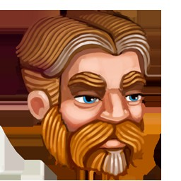
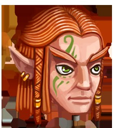
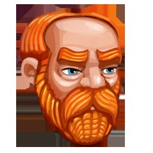
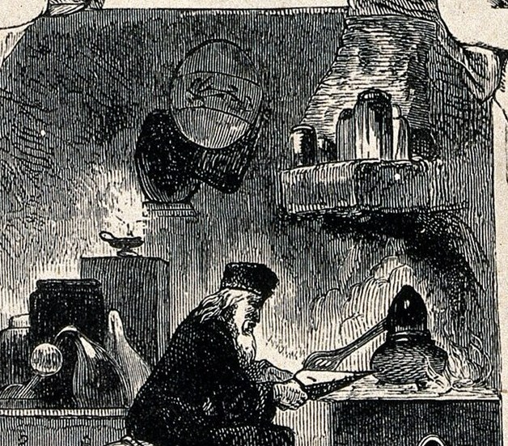
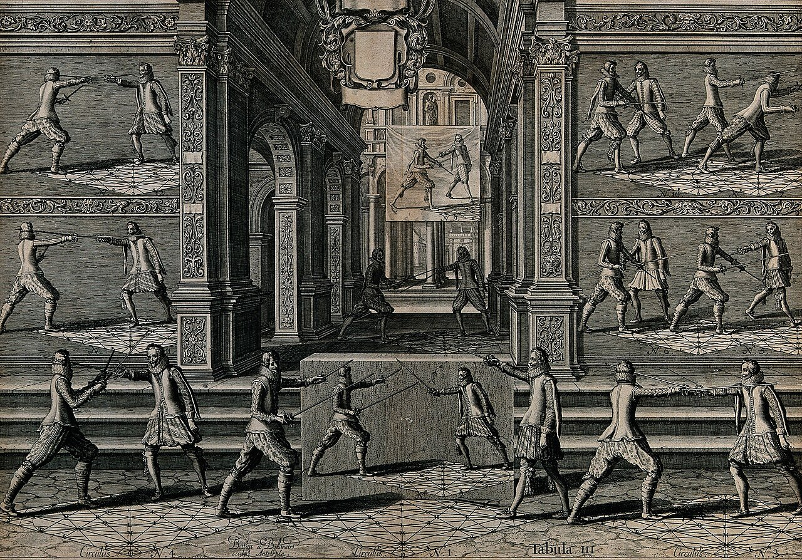
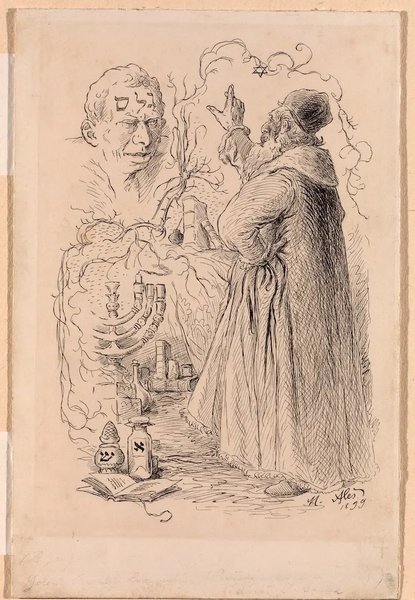
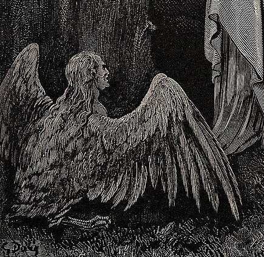
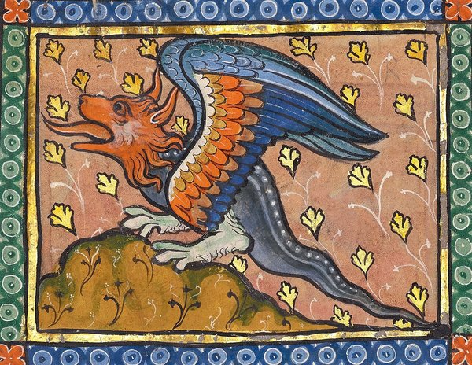
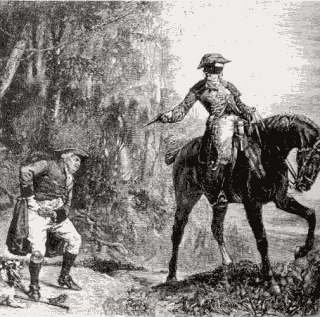
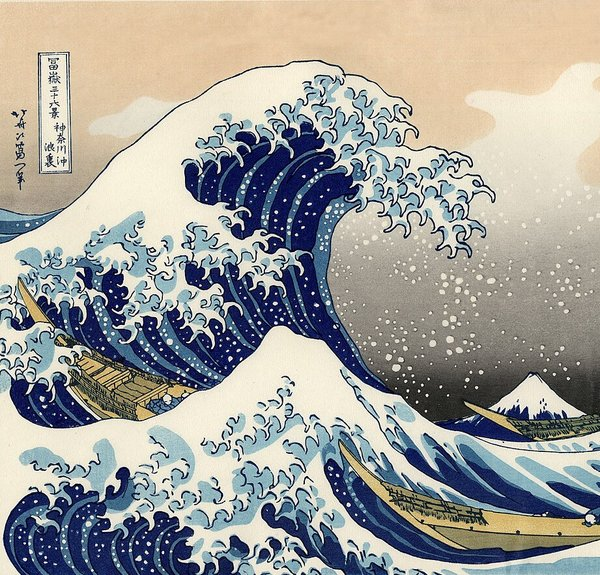

Reencarnação, mana e a segunda chance em um mundo de espadas e magia.
Um sourcebook de fã — completo, ilustrado e pronto para jogar em mesa.
Este é um sistema completo de RPG de mesa, para grupos de 3 a 5 jogadores e um Mestre. Antes da primeira sessão, todos devem ler os Capítulos 1 a 3; o resto o grupo consulta conforme joga. O Mestre deve ler o livro inteiro, incluindo o Capítulo 16.
Uma rolagem é escrita como NdX: N dados de X lados. 2d6 significa "role dois dados de seis lados e some". d20 sozinho significa um dado de vinte lados. Um modificador (mod.) é somado ou subtraído do resultado: d20 + mod. AGI significa "role um d20 e some o modificador de Agilidade".
Quando uma regra dá vantagem, role o dado indicado duas vezes e use o maior resultado. Com desvantagem, role duas vezes e use o menor. As duas nunca se acumulam — se uma situação daria os dois, elas se cancelam e rola-se normalmente.
Um conjunto de dados poliédricos (d4, d6, d8, d10, d12, d20) por jogador — ou um par de d20 e alguns d6, que cobrem quase tudo — lápis, borracha, fichas de personagem (Cap. 17) e fichas em branco de monstro para o Mestre.
Introdução"Ninguém escolhe onde nasce a segunda vez — mas todos escolhem o que fazem com ela."
Os personagens vivem em um mundo dividido em cinco grandes continentes, ligado por mana — a energia que permeia o ar, o solo e os seres vivos. Séculos atrás, uma grande guerra quase apagou a civilização; dela restaram ruínas, monstros fora de lugar e um medo antigo de certos povos que ninguém mais lembra bem por quê. É nesse mundo, já reconstruído mas ainda cheio de cicatrizes, que a campanha acontece.
Alguns habitantes carregam memórias de uma vida anterior, vivida em outro lugar completamente diferente, e despertam aqui com o corpo de uma criança e a mente de um adulto: são os Reencarnados (Capítulo 2) — raros, discretos sobre o próprio passado, e frequentemente movidos por um objetivo muito claro nesta segunda vida.
Mapa esquemático (não geograficamente exato) dos cinco continentes usados como pano de fundo de campanha.
Mana está em tudo: no ar que se respira, na água dos rios, no sangue dos monstros. Toda criatura viva possui uma reserva pessoal de mana, e é ela que alimenta a magia. Vilarejos pequenos raramente têm um mago residente; cidades médias e grandes têm ao menos uma escola ou guilda de magos.
Toda cidade de porte médio tem uma sede de guilda. Aventureiros recebem uma carteira com classificação por letra (F a S) que sobe conforme completam missões — ela também serve de identidade e crédito em muitas cidades. O Capítulo 12 detalha o sistema completo de ranques.
Espalhados pelo mundo existe um punhado de indivíduos — magos, espadachins e coisas piores — fortes o bastante para mudar o destino de uma guerra sozinhos. São referidos como as Sete Grandes Potências e servem de vara de medir para o quão poderoso alguém pode ficar. Nenhum personagem começa perto desse nível — mas, com anos de jogo, todos podem, um dia, chegar lá.
Superd, Migurd e Sangue-de-Dragão (Cap. 3) carregam, cada um à sua maneira, o peso de uma história que a maioria dos humanos conhece apenas em fragmentos distorcidos. Jogar um deles é jogar contra o preconceito do mundo — não uma penalidade mecânica pesada, mas uma lente narrativa que o Mestre deve usar com cuidado e nunca como piada fácil.
O sistema (raças, ofícios, magia, espada, combate) funciona sozinho como um RPG de fantasia genérico de "reencarnação e segunda chance". Troque nomes de lugares à vontade para sua própria mesa — nada aqui depende de geografia específica.
| Passo | O que fazer |
|---|---|
| 1. Origem | Escolha entre Nativo (nasceu e cresceu neste mundo) ou Reencarnado (memórias de outra vida; veja abaixo). |
| 2. Raça | Escolha uma raça no Capítulo 3. Aplique modificadores de atributo e habilidade racial. |
| 3. Atributos | Distribua 27 pontos (custo 8–13→1 cada, 14–15→2 cada; nada acima de 15 antes dos raciais) ou use o arranjo padrão 15, 14, 13, 12, 10, 8. |
| 4. Ofício | Escolha um Ofício no Capítulo 4 — define seu papel de combate e um recurso especial. |
| 5. Perícias | Marque 4 perícias como treinadas, mais as concedidas pelo Ofício (Capítulo 8). |
| 6. Equipamento | Pegue o pacote inicial do seu Ofício (Capítulo 10) ou compre com 50 Rea. |
| 7. Detalhes | Nome, cidade natal, um objetivo pessoal e um Vínculo com outro personagem do grupo (abaixo). |
Um personagem Reencarnado desperta neste mundo lembrando de uma vida anterior — geralmente comum, às vezes encerrada de forma abrupta e sem aviso. Mecanicamente:
Na criação, cada personagem escolhe um Vínculo com outro personagem do grupo: uma dívida, uma amizade de infância, um voto, uma rivalidade que virou lealdade. Uma vez por sessão, ao ajudar ou ser ajudado por esse aliado especificamente, o jogador pode repetir uma rolagem (sua ou do aliado) e ficar com o novo resultado.
| Atributo | Sigla | Uso |
|---|---|---|
| Força | FOR | Dano corpo a corpo, carregar peso, arrombar, parte do cálculo de Fôlego. |
| Agilidade | AGI | Iniciativa, Defesa, esquiva, furtividade, ataques à distância. |
| Vigor | VIG | Pontos de Vida, resistência a veneno/cansaço/frio, parte do Fôlego. |
| Inteligência | INT | Pontos de Mana, poder e alcance de magias, conhecimento. |
| Vontade | VON | Resistência mental, controle de mana em combate, percepção de perigo. |
| Carisma | CAR | Negociação, liderança, presença de espírito, animais e familiares. |
Modificador = (valor do atributo − 10) ÷ 2, arredondado para baixo. Ex.: FOR 14 → +2; FOR 9 → -1.
PersonagemSete povos dividem o mundo conhecido. Nenhuma raça é estritamente melhor que outra — cada uma joga um jogo diferente, e cada bônus tem um custo social ou situacional em algum lugar da ficha.

+1 em dois atributos à escolha. Aprende perícias e Ofícios em metade do tempo (vantagem em testes de treino fora de combate). A raça mais numerosa e adaptável; sem afinidade elemental fixa, mas também sem restrição alguma.

+2 AGI, +1 INT. Vantagem em Percepção e Furtividade em florestas. Vivem centenas de anos e envelhecem devagar — bons para personagens "sábios" mesmo jovens em nível. Comunidades élficas raramente saem de suas florestas natais, o que rende olhares curiosos alhures.

+2 FOR, +1 VIG. Resistência a veneno e a efeitos de medo. Bônus para identificar metais, forjar e avaliar itens (útil no Cap. 11). Povo de mineradores e ferreiros, comum no Continente Central, orgulhoso e de palavra firme.
+2 AGI, +1 FOR. Olfato e audição aguçados (vantagem em Percepção por cheiro/som). Vivem na Grande Floresta em clãs; grande diversidade de formas (orelhas, cauda, garras) — dois Feras raramente se parecem entre si.
+2 INT, +1 VON. A gema na testa permite Sentir Mana: detecta seres vivos e fontes de magia num raio de 20m, mesmo no escuro. Povo raro e temido por uma guerra antiga que não começaram sozinhos — desvantagem em testes sociais com quem não os conhece pessoalmente.
+2 INT, +1 CAR. Telepatia curta com outros Migurds (sem custo de mana, até 100m). Vivem cerca de 200 anos e amadurecem rápido no corpo, devagar na aparência. Povo raro, discreto, de vilas ocultas que preferem não ser encontradas.
+2 FOR, +2 VIG, −1 CAR. Escamas dão +1 de Defesa natural. Resistência a um elemento à escolha na criação. Raro, forte, e olhado com desconfiança pelas demais raças — jogue se quiser começar em desvantagem social e vantagem de combate.
O Ofício define seu papel na mesa: o recurso que você gasta, a abertura de combate que você domina, e uma habilidade de nível 5 que marca quem você se tornou. Um personagem pode trocar de Ofício depois, mas o treino começa do zero — trate isso como decisão de campanha, não de sessão.
Recurso: Fôlego (Cap. 7). Nível 1 — Postura de Escudo: +2 de Defesa enquanto usa arma de uma mão e escudo. Nível 5 — Inabalável: uma vez por combate, ignore os efeitos de Derrubado ou Atordoado.
Recurso: Mana (Cap. 5). Nível 1 — Canalização: +2 PM máximo por elemento aprendido. Nível 5 — Sobrecarga Controlada: uma vez por dia, conjure uma magia sem gastar PM (ainda precisa do grau necessário).
Recurso: Fôlego. Nível 1 — Mira Firme: ignora a desvantagem de atirar em alvo engajado em corpo a corpo. Nível 5 — Tiro Certeiro: uma vez por combate, um ataque à distância automaticamente acerta (ainda rola dano).
Recurso: Mana, com foco em Desintoxicação. Nível 1 — Mãos Constantes: suas magias de cura recuperam +2 PV fixos. Nível 5 — Segunda Chance: uma vez por dia, estabilize e cure 1 PV em um aliado a até 9m como reação, mesmo fora de alcance normal de toque.
Recurso: Fôlego. Nível 1 — Golpe Oportuno: +2d6 de dano contra um alvo Derrubado, Atordoado ou que ainda não agiu no combate. Nível 5 — Sombra entre Sombras: Furtividade nunca sofre desvantagem por falta de cobertura parcial.
Recurso: Mana e Fôlego, ambos reduzidos pela metade (arredondado para cima). Nível 1 — Lâmina Encantada: pode envolver a própria arma em um elemento conhecido, adicionando 1d4 de dano daquele tipo por 1 minuto (custa 2 PM). Nível 5 — Corte Dimensional: combine uma magia de grau 1 com um ataque corpo a corpo na mesma ação, uma vez por combate.

Magia é mana moldada por vontade e forma. Todo personagem com INT 10+ pode conjurar; a diferença entre um mago de rua e um Rei Mago está em quanto mana ele tem e quantas vezes já treinou a forma exata do feitiço.
PM = INT × 3 + nível × 2 (+2 por elemento se Mago Elemental). Conjurar custa PM igual a 2× o Grau da magia. PM voltam por completo após um descanso longo (uma noite de sono).
Por padrão, conjurar exige recitar um encantamento — uma ação inteira, e qualquer um por perto percebe que uma magia está vindo. Conjuração Silenciosa é um talento raro que pode ser treinado depois do nível 4 (com aprovação do Mestre): metade da ação, sem som — marca registrada dos maiores magos do mundo.
Fogo e Água se anulam; Vento e Terra se anulam. Desintoxicação não ataca — cura, remove veneno/doença e purifica água. Escolha 1 elemento inicial (2 se Mago Elemental, ou Reencarnado com Ofício "estudioso"); mais elementos podem ser aprendidos depois com treino em jogo.
| Grau | PM | INT mín. | Efeito típico |
|---|---|---|---|
| 1 — Iniciante | 2 | 10 | Bola de fogo do tamanho de um punho; pequeno curativo (1d6). |
| 2 — Intermediário | 4 | 12 | Lança que atravessa madeira; rajada que derruba; cura 2d6. |
| 3 — Avançado | 6 | 14 | Muro de chamas de 10m; tremor que abre fendas; cura grave. |
| 4 — Santo | 8 | 16 | Convocar chuva/nevasca numa região pequena; cura em área. |
| 5 — Real | 10 | 18 | Inundar um vale; reviver a vida vegetal de uma região. |
| 6 — Imperial | 12 | 20 | Abrir uma cratera do tamanho de uma vila; efeitos-lenda. |
| 7 — Divino | 16 | 22 | Reservado às Sete Grandes Potências; muda o mapa. |
A maioria das campanhas nunca ultrapassa o Grau 3–4: já são efeitos claramente heroicos.
Exemplos prontos para usar. O Mestre pode aprovar variações ou magias novas do mesmo grau e custo.
| Magia | Elemento · Grau | Custo | Efeito |
|---|---|---|---|
| Faísca | Fogo · 1 | 2 PM | 1d6 de dano de fogo, alcance 9m. |
| Lança de Fogo | Fogo · 2 | 4 PM | 2d6, atravessa e atinge um segundo alvo em linha. |
| Agulha d'Água | Água · 1 | 2 PM | 1d6 perfurante, ignora 2 pontos de Armadura. |
| Muro Líquido | Água · 2 | 4 PM | Bloqueia projéteis vindos de uma direção por 1 rodada. |
| Lâmina de Vento | Vento · 1 | 2 PM | 1d6 cortante, alcance 12m. |
| Rajada Derrubante | Vento · 2 | 4 PM | Empurra 3m; alvo cai se falhar em VIG (CD 13). |
| Punho de Pedra | Terra · 1 | 2 PM | 1d8 contundente, alcance curto (3m). |
| Tremor Local | Terra · 2 | 4 PM | Derruba todos num raio de 3m (VIG CD 13 para resistir). |
| Mãos que Curam | Desintox. · 1 | 2 PM | Cura 1d6 + mod. INT por toque. |
| Onda Vital | Desintox. · 2 | 4 PM | Cura 2d6 distribuídos entre até 3 alvos a 3m entre si. |

Assim como a magia tem graus, a espada tem estilos. Um personagem escolhe um dos três grandes estilos na criação (independente de Ofício — até um Mago pode ter treino formal de espada). Trocar de estilo depois exige treino do zero.
| Estilo | Filosofia | Mecânica |
|---|---|---|
| Deus-Espada | Golpear primeiro, golpear forte. Ofensiva pura. | +2 no primeiro ataque de cada combate; sem bônus de Defesa. |
| Deus-Água | Ler o inimigo, aparar, contra-atacar. | +2 de Defesa; ao aparar com sucesso, gaste a reação para contra-atacar imediatamente. |
| Deus-Norte | Sobreviver a qualquer custo, usar o ambiente, ser imprevisível. | Uma vez por combate, use o cenário (derrubar algo, jogar terra) para forçar o alvo a repetir a próxima rolagem de ataque contra você. |
Deus-Espada supera Deus-Norte (rápido demais para reagir). Deus-Norte supera Deus-Água (imprevisível demais para ler). Deus-Água supera Deus-Espada (aparar quem só ataca é mais fácil).
Cada estilo evolui em sete graus (Novato, Intermediário, Avançado, Santo, Rei, Imperador, Deus). A cada grau alcançado — via treino em jogo, a critério do Mestre — o personagem aprende uma técnica nova.
| Grau | Técnica de exemplo (qualquer estilo) |
|---|---|
| Novato | Golpe Firme: +1 de dano fixo com armas do estilo. |
| Intermediário | Passo de Combate: mover-se 3m como parte de um ataque, sem gastar deslocamento. |
| Avançado | Corte Duplo: uma vez por rodada, ataque duas vezes por 3 Fôlego (veja Cap. 7). |
| Santo | Leitura de Combate: vantagem no primeiro ataque contra um alvo que você observou por 1 rodada. |
| Rei | Golpe que Quebra Guarda: ataques ignoram metade da Defesa vinda de armadura. |
| Imperador | Onda de Corte: um ataque atinge todos os inimigos adjacentes ao alvo. |
| Deus | Marca de Mestre: uma vez por sessão, um ataque é automaticamente um acerto crítico. |
Assim como magos gastam Mana, quem luta de perto gasta Fôlego: fôlego físico, foco e adrenalina. É o recurso que dá às Manobras de combate a mesma sensação tática que a magia dá aos conjuradores.
FL = (mod. FOR + mod. VIG) × 2 + nível × 2, mínimo 4. Diferente da Mana, o Fôlego volta por completo após um descanso curto (cerca de 10 minutos) — personagens marciais agem mais vezes por sessão, mas não guardam reservas de um dia inteiro como os magos.
| Manobra | Custo | Efeito |
|---|---|---|
| Investida Certeira | 3 FL | Mova-se até seu deslocamento e ataque com +2. |
| Golpe Duplo | 4 FL | Dois ataques na mesma ação, cada um com −2. |
| Aparar Perfeito | 2 FL (reação) | Anula completamente um ataque corpo a corpo contra você. |
| Desarmar | 3 FL | Teste oposto de FOR contra FOR ou AGI do alvo; sucesso derruba a arma dele. |
| Grito de Guerra | 2 FL | Aliados num raio de 9m ganham +1 em ataque até o fim da próxima rodada. |
| Passo Sombrio | 3 FL (requer AGI 14+) | Mova-se sem provocar ataques de oportunidade e ganhe vantagem no próximo ataque. |
Um 20 natural em um ataque é sempre um acerto crítico: dobre os dados de dano (não o modificador). Um 1 natural em qualquer teste de combate é uma complicação — role 1d6 na tabela abaixo.
| d6 | Complicação |
|---|---|
| 1 | A arma escorrega da mão e cai a 2m. |
| 2 | Perde o equilíbrio: fica Derrubado. |
| 3 | Fica exposto: o próximo ataque contra você tem vantagem. |
| 4 | Gasta munição ou material extra sem efeito. |
| 5 | Machuca-se levemente: sofre 1 ponto de dano. |
| 6 | Chama atenção indesejada — um som alto, um grito, algo se move nas sombras. |
Perícia treinada dá +2 no teste (d20 + mod. do atributo + bônus de treino, contra uma Dificuldade definida pelo Mestre: 10 fácil, 15 moderado, 20 difícil, 25 quase impossível).
| Perícia | Atributo | Perícia | Atributo |
|---|---|---|---|
| Atletismo | FOR | Intuição | VON |
| Luta | FOR | Medicina | INT |
| Acrobacia | AGI | Arcanismo | INT |
| Furtividade | AGI | Alquimia | INT |
| Pontaria | AGI | Sobrevivência | VON |
| Percepção | VON | Persuasão | CAR |
| Vontade | VON | Enganação | CAR |
| Adestramento | CAR | Liderança | CAR |
| Etapa | Regra |
|---|---|
| Iniciativa | d20 + mod. AGI. Ordem decrescente. |
| Ação | Atacar, conjurar, usar Manobra, mover-se até o dobro do deslocamento, usar item, ajudar aliado. |
| Reação | Aparar, esquivar ou usar uma técnica reativa de estilo/magia, uma vez por rodada. |
| Ataque | d20 + mod. relevante (FOR corpo a corpo / AGI à distância) contra a Defesa do alvo. |
| Dano | Dado da arma ou magia + mod. relevante, reduzido pela Armadura do alvo. |
Defesa = 10 + mod. AGI + bônus de armadura/estilo. PV = (VIG × 4) + PV extra da raça (Sangue-de-Dragão +4) + (nível × 3).
| Condição | Efeito |
|---|---|
| Derrubado | Desvantagem em ataques corpo a corpo contra o alvo; +2 à distância contra ele. |
| Envenenado | −2 em todos os testes até ser curado (Desintoxicação Grau 1+ remove). |
| Atordoado | Perde a reação da rodada. |
| Inconsciente | PV a 0; estabiliza com Medicina CD 10 ou morre em 10 minutos. |
| Arma | Dano | Preço | Nota |
|---|---|---|---|
| Adaga | 1d4 | 5 Rea | Leve, pode ser arremessada. |
| Espada curta | 1d6 | 15 Rea | Padrão dos três estilos de espada. |
| Espada longa | 1d8 | 30 Rea | Requer FOR 12+ para usar sem penalidade. |
| Lança | 1d8 | 20 Rea | Alcance 2m; ataca antes de inimigos que avançam. |
| Arco curto | 1d6 | 25 Rea | Alcance 40m; usa AGI para o ataque. |
| Cajado | 1d4 | 20 Rea | +1 Grau efetivo na primeira magia de cada combate. |
| Armadura | Defesa | Preço |
|---|---|---|
| Roupas de viagem | +0 | — |
| Couro batido | +2 | 20 Rea |
| Cota de malha | +4 | 60 Rea (−1 AGI em Furtividade/Acrobacia) |
| Placas | +6 | 150 Rea (−2 AGI em Furtividade/Acrobacia) |
| Ofício | Pacote |
|---|---|
| Guerreiro | Espada longa + escudo + couro batido + kit de aventureiro + 10 Rea. |
| Mago Elemental | Cajado + roupas de viajante + grimório pessoal + 20 Rea. |
| Arqueiro/Batedor | Arco curto + 20 flechas + couro batido + kit de rastreio + 10 Rea. |
| Curandeiro | Cajado ou adaga + roupas + kit de cura (3 usos) + 15 Rea. |
| Ladino | Duas adagas + roupas escuras + kit de arrombamento + 15 Rea. |
| Espadachim-Arcano | Espada curta + couro batido + grimório + 5 Rea. |
Durante um descanso longo em segurança, um personagem com Alquimia treinada pode fabricar um item da tabela abaixo: teste de Alquimia (CD = 10 + preço em Rea ÷ 10) consumindo materiais equivalentes à metade do preço. Materiais de monstro (uma glândula de Gosma, uma garra de Lobo) podem substituir parte do custo, a critério do Mestre.
| Item | Efeito | Preço |
|---|---|---|
| Poção de Cura Menor | Recupera 2d4+2 PV ao beber (ação). | 15 Rea |
| Poção de Mana | Recupera 10 PM ao beber. | 20 Rea |
| Antídoto Universal | Remove Envenenado e uma doença comum. | 15 Rea |
| Óleo de Fio | Aplicado a uma arma, dá +1 no dano por 1 combate. | 10 Rea |
| Amuleto de Resistência Elemental | Escolha um elemento: dano dele é reduzido à metade. | 60 Rea |
| Anel do Passo Silencioso | Vantagem permanente em Furtividade contra audição. | 80 Rea |
| Capa das Sombras | Uma vez por dia, torna-se invisível por 1 rodada ao ficar imóvel. | 120 Rea |
Toda cidade de porte médio tem uma sede de guilda: um mural de missões, um balcão de registro e, quase sempre, uma taverna anexa. O ranque de um aventureiro é a forma mais rápida de qualquer estranho avaliar sua confiabilidade e seu poder — para o bem e para o mal.
| Ranque | Nível sugerido | Tipo de missão | Pagamento típico |
|---|---|---|---|
| F | 1 | Coleta, mensagens, extermínio de pragas. | 5–15 Rea |
| E | 1–2 | Escolta curta, caça a monstros menores. | 15–30 Rea |
| D | 2–3 | Investigação, monstros de bando. | 30–60 Rea |
| C | 3–4 | Masmorras curtas, escolta longa, monstros isolados fortes. | 60–120 Rea |
| B | 4–5 | Ameaças regionais, monstros-líder. | 120–250 Rea |
| A | 5+ | Crises que envolvem nobreza ou fronteiras. | 250–500 Rea |
| S | lendário | Reservado às Sete Grandes Potências e catástrofes. | negociável |
Subir de ranque exige completar um número de missões daquele nível (a critério do Mestre, tipicamente 3 a 5) e nunca abandonar uma sem justificativa registrada — reputação de guilda é rápida de perder e lenta de reconstruir.
Oito ameaças comuns para começar uma campanha — genéricas o bastante para encaixar em qualquer região do mapa.
PV 12 · Defesa 13 · Ataque (mordida) +4 (1d6+2) · Caça em bando de 3 a 5. Se dois lobos atacam o mesmo alvo na mesma rodada, o segundo ataque tem vantagem.
PV 16 · Defesa 12 · Ataque (espada enferrujada) +3 (1d8+1) · Imune a veneno e medo. Desintoxicação não afeta; magia de fogo ou Santa causa dano dobrado.

PV 40 · Defesa 16 · Ataque (soco) +6 (2d8+3) · Lento (metade do deslocamento). Resistência a dano físico (metade do dano de armas, não de magia). Ideal como "chefe" de uma masmorra curta.
PV 8 · Defesa 10 · Ataque (toque ácido) +2 (1d4, e −1 de Defesa da armadura atingida até ser reparada). Se reduzida a 0 PV por dano cortante, divide-se em 2 gosmas com metade do PV (só uma vez).

PV 18 · Defesa 15 (voando) · Ataque (garras) +5 (1d6+2) · Pode gritar como ação: todos num raio de 9m fazem VON (CD 13) ou ficam Atordoados por 1 rodada.

PV 30 · Defesa 15 · Ataque (mordida) +6 (2d6+3) ou sopro elemental (recarrega com 1-2 num d6 a cada rodada): linha de 9m, 3d6 de dano do elemento escolhido na criação da criatura, metade se o alvo passar em AGI CD 14.

PV 14 · Defesa 14 · Ataque (adaga) +4 (1d4+2) ou arco curto +4 (1d6+2) · Furtividade +5. Prefere emboscadas e foge com menos de um quarto do PV, salvo ordens contrárias de um líder.

PV 20 · Defesa 14 · Ataque (jato) +5 (2d6, dano de água) · Imune a dano de água, vulnerável a Vento (dano dobrado). Pode se mover através de qualquer corpo d'água instantaneamente uma vez por combate.
Dois PNJs prontos para acompanhar o grupo, aparecer em uma missão da guilda, ou servir de contato recorrente numa cidade.
"Eu já vi essa marca de garra antes — e não gostei de onde isso terminou da última vez."
PV 22 · Defesa 15 · Ataque (arco) +6 (1d6+3) · Percepção +6, Sobrevivência +6. Direta, pragmática, coleciona
dívidas e favores como moeda. Vínculo em potencial: já perdeu um grupo inteiro numa missão mal calculada e
agora pesa cada decisão duas vezes.
"Aguentei coisa pior com metade da armadura que vocês têm. Fica atrás de mim e respira fundo."
PV 34 · Defesa 17 · Ataque (machado) +6 (1d10+3) · Resistência a medo, veneno. Ex-veterano de uma guerra de
fronteira que não gosta de falar; leal até o osso com quem prova ser digno de confiança devagar.
Gancho pronto para 3–4 horas de jogo, nível inicial, 3 a 5 jogadores.
A vila de Coalvale fica à beira do Bosque Cinza, onde um selo antigo mantém adormecida uma fera de pedra (use o Golem de Pedra Rúnica, Cap. 13, como chefe final). Nos últimos dias, Gosmas Ácidas e um bando de Lobos das Estepes têm saído da floresta com mais frequência — sinal de que o selo está enfraquecendo. A guilda local (ranque F–E) oferece 30 Rea por cabeça e 100 Rea para quem descobrir e resolver a causa.
Investigação social: falar com a guilda, o ferreiro (vende equipamentos do Cap. 10) e um caçador idoso que sabe do selo (Persuasão CD 12 para ele contar a história completa: o selo foi erguido há três gerações após um incidente que a vila prefere não repetir em detalhe).
Emboscada de 2 Lobos + 1 Gosma no caminho até as ruínas do selo. Sobrevivência CD 13 acha o caminho mais curto e evita um segundo encontro. Se o grupo demorar mais de uma cena investigando na vila, adicione um Batedor Bandido observando de longe — ele é quem forçou a rachadura (veja Cena 3).
Mapa das ruínas: 1. Entrada coberta de raízes → 2. Câmara com escombros (o Batedor pode emboscar aqui) → 3. Cripta lateral opcional (itens, Cap. 11) → 4. Câmara do Selo.
O selo tem uma rachadura com marcas de ferramenta — alguém a forçou de propósito. O grupo pode reparar a rachadura com Arcanismo CD 15 (2 tentativas, cada personagem tenta apenas uma vez) ou enfrentar o Golem quando ele desperta no meio do reparo — o que for mais divertido para sua mesa.
Trate os graus de magia e espada (Cap. 5–6) como marcos narrativos, não como "level up" automático: um personagem sobe de Intermediário para Avançado quando a história justificar — meses de treino, um duelo decisivo, a superação de um trauma pessoal.
| Nível | XP necessário | Ganho |
|---|---|---|
| 1→2 | 300 | +1 perícia treinada |
| 2→3 | 900 | +1 atributo (máx. 16) |
| 3→4 | 1800 | Novo grau de magia OU espada disponível para treino |
| 4→5 | 3200 | +1 atributo (máx. 16); habilidade de nível 5 do Ofício (Cap. 4) |
100–300 XP por sessão dependendo de dificuldade dos combates e qualidade do roleplay, dividido igualmente entre o grupo. Vitórias inteligentes (evitar um combate ruim, negociar bem) valem tanto quanto vitórias em combate.
Some o total de PV dos monstros de um encontro. Se passar de PV total × 1,5 em relação à soma de PV do grupo, o combate está pesado — considere reduzir o número de inimigos ou dar ao grupo uma vantagem de terreno.
O tema de "segunda chance" é o coração do cenário. Vale a pena, de tempos em tempos, perguntar diretamente ao jogador: "o que seu personagem faria diferente desta vez?" — e deixar a resposta influenciar a sessão.
| Modificador de atributo | 8=-1 · 10-11=+0 · 12-13=+1 · 14-15=+2 · 16-17=+3 · 18=+4 | |||||||
|---|---|---|---|---|---|---|---|---|
| Nível | CD |
|---|---|
| Fácil | 10 |
| Moderado | 15 |
| Difícil | 20 |
| Quase impossível | 25 |
| Recurso | Fórmula |
|---|---|
| PV | VIG×4 + nível×3 |
| PM | INT×3 + nível×2 |
| FL | (FOR+VIG mod.)×2 + nível×2 |
| Defesa | 10 + AGI + armadura |
Além das ilustrações vetoriais originais deste livro, algumas imagens são obras de domínio público ou licenciadas sob Creative Commons, usadas por transparência e cortesia:
— Capa: Albrecht Dürer, O Cavaleiro, a Morte e o Diabo (1513), National Gallery of Art — domínio público (CC0).
— Retratos de Humano, Elfo e Anão: Ravenmore (dycha.net), OpenGameArt.org — CC BY 3.0.
— Sistema de Magia: "A wizard-like alchemist at his alembic", gravura de Dalziel, Wellcome Collection — CC BY 4.0.
— Estilos de Espada: "Men fencing", gravura de Boetius a Bolswert, Wellcome Collection — CC BY 4.0.
— Golem de Pedra Rúnica: Mikoláš Aleš, O Maharal de Praga e o Golem (1899) — domínio público.
— Harpia da Névoa: Gustave Doré, ilustração para O Inferno de Dante, Canto XIII (1861) — domínio público.
— Dracônico Jovem: miniatura do Bestiário de Hugh of Fouilloy, c. 1270, The Getty Museum — domínio público.
— Batedor Bandido: gravura inglesa do séc. XIX, "Highwayman" — domínio público.
— Espírito das Águas: Katsushika Hokusai, A Grande Onda de Kanagawa (c. 1831) — domínio público.
Nenhuma arte oficial de Mushoku Tensei, nem de terceiros sem licença adequada, foi utilizada.
Mushoku Tensei RPG — Livro do Jogador · Fan sourcebook não-oficial · Uso pessoal e não-comercial